Předci z maminčiny strany. Údaje pocházejí z digitalizovaných matrik Státního oblastního archivu v Třeboni. U každé osoby je odkaz na snímek zápisu, jeho výřez a přepis. Údaje o posledních generacích pocházejí od rodiny, ne z matrik.
Rodokmen
* narození (křest) · † úmrtí · ∞ sňatek · ⌂ povolání a bydliště · ? zatím neznámé
rodiče Petra Mauna
Vojtěch (Albert) Maun*?†1697–1700∞24. 2. 1669 Magdalena (pravděpodobně)⌂sedlák/chalupník, Ostrov
Magdalena*?†?∞Vojtěch Maun⌂Ostrov
Děti: Markéta 1670, Voršila 1671, Ondřej 1674, Vít 1677, Jakub 1680, Regina 1682, Jan 1685, Petr 1687, Václav 1692, Uršula
rodiče Jana Mauna
Petr Maun*3. 6. 1687 Ostrov†?∞26. 1. 1721 Terezie⌂podruh, město Prachatice (1721)
Terezie Kaderžávková(?)*?†?∞1721 Petr Maun⌂Ostrov
otec Magdaleny Schißlové
Vavřinec Schißl*?†?∞Gertruda(?)⌂sedlák, Ostrov
V Ostrově tehdy dva Vavřinci Schißlové (ženy Alžběta a Gertruda). Schißlové v Ostrově už 1721; 1728 se oženil Jakub Maun, syn Jana Mauna z Ostrova – snad Petrův příbuzný.
možní rodiče Matouše Krejsy podle rodinného rodokmenu
Martin Krejsa*asi 1727–1729†12. 3. 1785∞Johana⌂sedlák, Hoštice čp. 16
Jan Maun*9. 5. 1728 Ostrov (pravděpodobně)†?∞21. 11. 1756 Magdalena Schißlová⌂sedlák, Ostrov čp. 7
Magdalena Schißlová*26. 5. 1733 Ostrov (pravděpodobně)†?∞1756 Jan Maun⌂Ostrov čp. 7
rodiče Doroty Varcabové
Pavel Varcaba*?†před 1781∞30. 9. 1753 Marie Anna (předtím Uršula, Veronika)⌂sedlák, Ostrov
Marie Anna Gehlíková(?)*? (z Chlistova)†?∞1753 Pavel Varcaba⌂Ostrov
Martin a Johana jsou v matrice doloženi křtem dcery Uršuly 19. 10. 1755 (Lštění, sn. 47). Matoušovo rodičovství zatím není přímo doloženo: jeho oddací zápis z roku 1785 uvádí věk 30 let, ale neuvádí rodiče. Rodinný rodokmen klade jeho narození přibližně do let 1752–1753. Přepis soupisu poddaných 1777 uvádí u Martina a Johany Annu a Jiřího, Matouše nikoli.
Možní starší předci (vazba neprokázaná): v hoštické a bucké větvi farnosti Lštění žili v letech 1720–1740 Kreyzové – Jan Kreyza z Buku († 1723, 60 let), Marie Kreyzová z Hoštic († 1734, 68 let) a Martin Kreyza, který se roku 1732 oženil s Kateřinou z Buku (Lštění 5346, sn. 104; Codex, jádro zápisu ověřeno na snímku). Mohou to být rodiče Martina (* asi 1728), ale křty Lštění 1726–1734 se nedochovaly online, takže to zatím doložit nejde.
Terezie Maunová*21. 9. 1788 Ostrov (kronika)†8. 3. 1869 Hoštice čp. 12∞1817 Josef Krejsa⌂Hoštice čp. 12
Sourozenci Kateřiny (čp. 12): Regina 1818 · Marianna 1819 · Ondřej 1821 · dítě 1824 († v dětství) · František, sedlák na čp. 12 (v zápisu 1885 výslovně „syn † Josefa Krejsy, sedláka z čp. 12, a Terezie roz. Maunové z Ostrova č. 18“, 7846, sn. 188)
Pozemková kniha Hoštic 1702–1879 (kniha 1042): v rejstříku je u čp. 12 zapsáno „Andreas et Barbara Kreysla“ a na foliu 29 „Josefs Krejsla“. Andreas může být syn Ondřej (* 1821) se ženou Barborou jako další hospodáři – zatím neověřeno, zbytek folia je špatně čitelný.
Josef Krejsa*30. 9. 1852 Hoštice čp. 12 (nemanželský)†mezi 1911 a 1921 (1921 je Kateřina vdova)∞1886 Kateřina Drabešová⌂bydliště podle pramenů:1852 Šumavské Hoštice čp. 12 – narozen u dědečka Josefa Krejsy, sedláka (kmotři = prarodiče)1862 matka se vdala do Dvorů u Lažišť; Josef (9 let) nejspíš zůstal u prarodičů na čp. 12 – při jeho sňatku 1886 jsou v kolonce rodičů zapsáni Josef Krejsa z Hoštic č. 12 a Terezie, tedy prarodiče (přímý doklad pobytu chybí)1886 Předslavice čp. 1 – čeledín (oddací matrika, str. 81); čp. 1 patřilo 1910 faře1887–1891 Předslavice čp. 20 – narození dětí Marie (~1887, † 1891) a Josefa (1890); nejspíš jako nájemník nebo čeledín, ne majitel1910 Předslavice čp. 12 – dům hraběte Herbersteina; čeledín na velkostatku, s manželkou a synem; domovská obec Hoštice1921 už nežil – vdova Kateřina bydlí od 19. 5. 1919 u syna v Želibořicích čp. 1
Kateřina Drabešová*13. 3. 1857 Malenice? (sčítání 1910); dcera Matěje Drabeše, nájemníka v Malenicích č. 41, a Anny (čteno z fotografie oddací matriky)†?∞7. 1. 1886 Josef Krejsa (oddací matrika str. 81)⌂1910 Předslavice čp. 12; 1921 vdova u syna, Želibořice čp. 1
Sčítání 1910: matka syna Josefa je Kateřina (* 1857); „Marie“ v rejstříku je chyba.
Josef Krejsa*7. 11. 1890 Předslavice čp. 20†?∞16. 9. 1919 Růžena Nečinová (kronika)⌂1921 Želibořice čp. 1 (byt 7): čeledín na velkostatku, 1914 hudebník; později čp. 11 (kronika)
Josef Krejsa*pravděpodobně 17. 3. 1920 Želibořice (sčítání 1921 – syn Josefa a Růženy)⌂Bušanovice; otec Heleny (podle rodiny)
Helena Pechlátová*1954, Bušanovice (roz. Krejsová, podle rodiny)
doloženo zápis v matricenejisté jméno je v zápisu, čtení příjmení nebo místa zatím nejistékronika podle rodinné kroniky, zatím neověřeno v matricebez pruhu = údaj od rodiny
Kde rod žil
Všechna místa leží na pomezí Šumavy a Prachaticka, v okruhu asi 20 km. Čára ukazuje, jak se rod během 250 let stěhoval. Barva odpovídá době, číslo pořadí. Na značku se dá kliknout.
18. století1. pol. 19. století2. pol. 19. století20. stoletíokolí, souvislosti
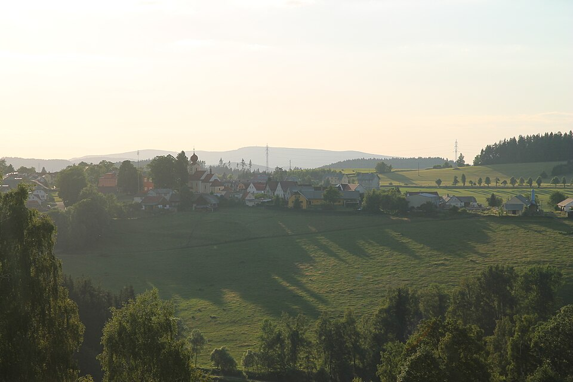
Šumavské Hoštice – grunty čp. 16 a 12 – rod Krejsů 1777–1891 Foto: Draceane, CC BY-SA 4.0, Wikimedia Commons
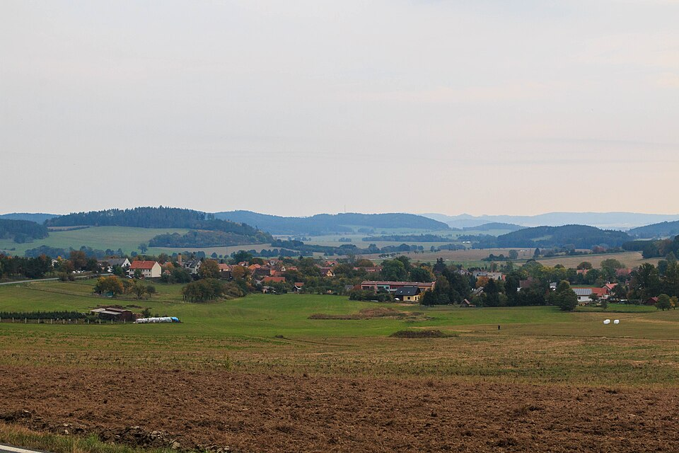
Chlumany – čp. 41 – Matouš Krejsa a Marie Kotrcová, 1785–1790 Foto: Petr1888, CC BY-SA 4.0, Wikimedia Commons
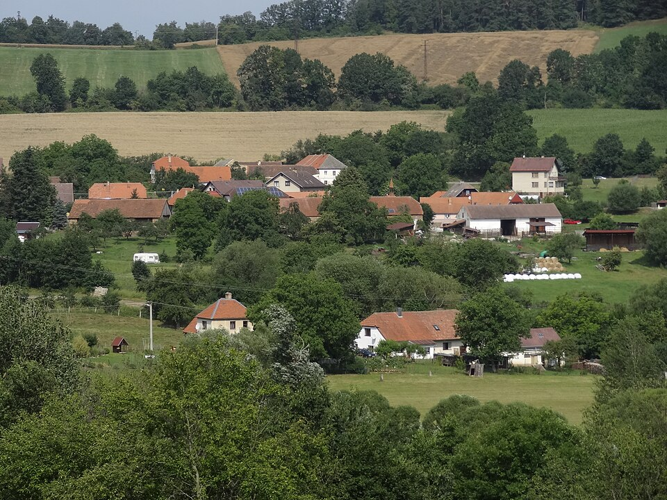
Ostrov u Prachatic – čp. 7 – grunt Maunů; Varcabové Foto: MartinVeselka, CC BY-SA 4.0, Wikimedia Commons
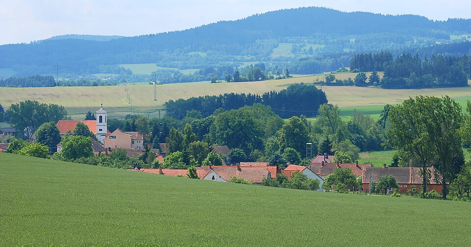
Předslavice – čp. 1 a 20 – Josef Krejsa (* 1852) a rodina Foto: StaraBlazkova, CC BY-SA 3.0, Wikimedia Commons
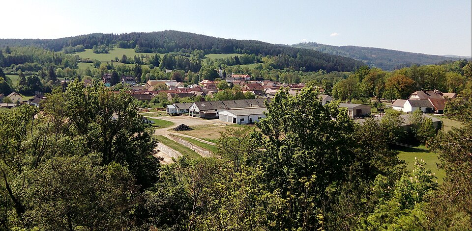
Malenice – Drabešovi Foto: Czeva, CC BY-SA 3.0, Wikimedia Commons
Želibořice – čp. 11 „Ve dvoře“ – Josef Krejsa (* 1890) Foto: Juandev, CC BY-SA 3.0, Wikimedia Commons
Fotografie ukazují obce dnes; konkrétní domy rodiny na Wikimedia Commons nejsou – u každého místa v mapě je odkaz na pohled z ulice. Čísla popisná se od 18.–19. století mohla změnit.
Osoby a zápisy
Josef Krejsa
doloženo
Narozen
30. září 1852, Šumavské Hoštice čp. 12 (okres Vimperk)
Přepis (německy): 30. September 1852 · Hoschitz N° 12, Bezirk Winterberg, Kreis Pilsen · Josef Kreysa · katholisch · männlich · unehelich. Mutter: Katharina, eheliche Tochter des Josef Kreysa, Bauer zu Hoschitz N° 12, und dessen Ehegattin Theresia, Tochter des Bartl [příjmení nečitelné], Bauer zu [místo nejisté], und der Dorothea gebornen [nejisté] … Pate: Josef Kreysa, Bauer zu Hoschitz N° 12, Theresia dessen Ehegattin. Pfarrer: Anton [?] Lokalist. Hebamme: [?] aus Hoschitz. Překlad: 30. září 1852, Hoštice čp. 12, okres Vimperk, kraj Plzeň – Josef Krejsa, katolík, chlapec, nemanželský. Matka Kateřina, manželská dcera Josefa Krejsy, sedláka v Hošticích čp. 12, a jeho manželky Terezie. Kmotry byli nejspíš sami prarodiče Josef a Terezie Krejsovi.
Rodinná tradice říká, že otec dítěte byl šlechtic, nejspíš z rodu Dietrichsteinů. V zápisu kolonka otce zůstala prázdná a dodatečné uznání otcovství tu není. Tradici zatím nelze potvrdit ani vyvrátit.
11. února 1862 v Šumavských Hošticích s Kajetánem Křížem, obecním pastýřem ve vsi Dvory (23¾ roku, nezletilý – sňatek povolil otec), synem Martina Kříže, obecního pastýře z Malenic, a Marie roz. M…(?), okres Volyně (příjmení a obec nečitelné). Nevěsta: „Kateřina Krejsa, dcera Josefa Krejsy, sedláka z Hoštic N. 12, a jeho manželky Terezie rozené Maun z Ostrova N. 7, okres Prachatice“, 33 let. Ohlášky 3., 4. a 5. neděli po Zjevení Páně; oddával farář Antonín Hrdlička. Svědek Ondřej Kr…(?), sedlák z Hoštic (oddaní Šumavské Hoštice 1857–1925, snímek 22; našel a přečetl Claude, 21. 10. 2026). Zápis je česky, kurentem; jména rodičů nevěsty a čp. 12 sedí s jejím křtem 1829. Synovi Josefovi bylo tehdy 9 let.
Děti s Kajetánem
Rodina žila ve Dvorech u Lažišť čp. 26 (farnost Lažiště). Jakub Kříž * 30. 8. 1862 (pokřtěn 31. 8.), otec „Kajetán Kříž, obecní pastýř ze Dvorů, syn Martina Kříže, pastýře“, matka „Kateřina, vlastní dcera Josefa Krejsy, sedláka z Hoštic“ (Dvory 1824–1903, snímek 47). Václav Kříž * 8. 9. 1864 (pokřtěn 9. 9.), Dvory čp. 26, stejní rodiče (snímek 49; jméno babičky tu farář zapsal chybně jako „Marie Šíslová z Ostrova“). Našel a přečetl Claude, 22. 10. 2026. Jakub se narodil 6½ měsíce po svatbě.
Další osud
Václav Kříž zemřel 17. 8. 1868 ve Dvorech čp. 26 („Václav Kříž, dítě Kajetána Kříže, obecního slouhy ze Dvorů čís. 26, a Kateřiny roz. Krejsové z Hoštic“, Dvory, snímek 117; rok podle záhlaví stránky). Kateřina ani Kajetán ve Dvorech do roku 1903 nezemřeli; roku 1875 už v pastoušce čp. 26 bydlel jiný obecní pastýř (Matěj Fejna) – Křížovi tedy kolem roku 1870 odešli jinam, jak bývalo u obecních pastýřů zvykem.
Konec života
Křížovi se po odchodu ze Dvorů usadili v Husinci. 6. 11. 1892 tam zemřel „Kříž Kajetán, nádeník v Husinci č. 157, manžel Kateřiny roz. Krejsa z Hoštic č. 12, okres Vimperk, nar. v Bohumilicích(?), okres Vimperk“, 53 let, tuberkulóza (zemřelí Husinec 1877–1910, snímek 80). Kateřina zemřela 29. 5. 1898 v Husinci č. 110: „Kateřina Křížová, vdova po † Kajetánu Křížovi, nádeníku v Husinci č. 157, roz. Krejsová z Hošic č. 12“, pohřbena 31. 5. na farním hřbitově nad Husincem, příčina „sešlost věkem“, rok narození zapsán 1824 (skutečně 1829) (snímek 112). Zápisy našel v rejstříku Codex, v matrice přečetl a ověřil Claude, 22. 10. 2026.
Rodina Křížů
pravděpodobně Kajetánův otec: 11. 5. 1868 zemřel „Martin Kříž, obecní slouha z Pěčnova čís. 6“, 64 let (Pěčnov a Žárovná, snímek 166; Claude). Roku 1862 byl Kajetánův otec Martin Kříž obecním sluhou v Malenicích – obecní sluhové se stěhovali, totožnost je proto pravděpodobná, ne jistá. Obecním sluhou v Pěčnově čp. 6 byl pak Josef Kříž (snad Kajetánův bratr). Kateřina ani Kajetán v úmrtích Lažiště, Dvorů, Chlístova, Kratušína a Pěčnova do roku 1903 nejsou.
Sňatek 11. 2. 1862 – zápis vlevo: ženich Kajetán Kříž, nevěsta Kateřina Krejsa, dcera Josefa Krejsy z Hoštic čp. 12 a Terezie roz. Maun z Ostrova čp. 7.
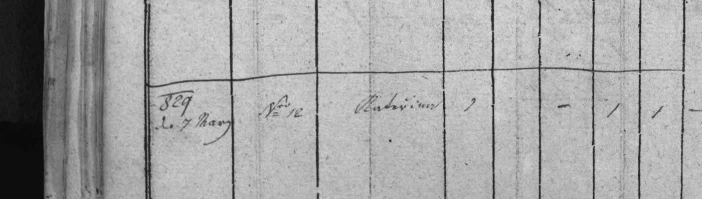
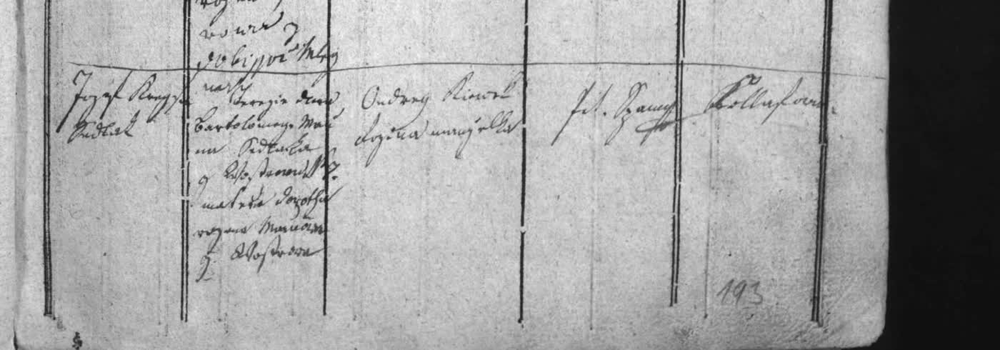
Poslední zápis na straně 77, roční záhlaví 1829.
Přepis: 1829 den 7 März · N° 12 · Katharina · katholisch · weiblich · ehelich. Otec: Jozef Kreysa, sedlák. Matka: Terezie, dcera Bartoloměje [příjmení nejisté], sedláka z [místo nejisté] domu N° 7, matka Dorothea rozená [nejisté] … Kmotr: Ondřej [?] s manželkou. Pozn.: Datum, číslo domu i jméno přesně odpovídají údajům, které má rodina.
Josef Krejsa (starší)
doloženo
Postavení
sedlák (Bauer) na usedlosti Šumavské Hoštice čp. 12
Doložen
1829 jako otec Kateřiny; 1852 jako děd a nejspíš kmotr Josefa
1817 ve farnosti Prachatice (rejstřík, viz Terezie); úplný zápis v knize oddaných zatím nenalezen
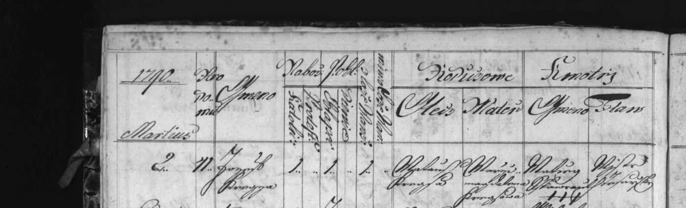
Josef Krejsa starší: „1790, Martius 2, No 41, Joseph Krejsa – otec Matauš Krejsa, matka Marie Magdalena Krejsowa“.
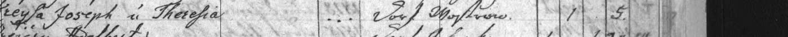
Sňatek Josefa Krejsy a Terezie (Maunové) roku 1817 v rejstříku farnosti Prachatice – „Dorf Mostrow“ = vesnice Ostrov.
Matouš Krejsa a Marie Kotrcová
doloženo
Sňatek
8. 5. 1785 v Chlumanech, čp. 41; ženichovi 30 let, nevěstě 24 let (narození tedy asi 1755 a 1761); svědek mj. Jiřík Krejsa – matrika Chlumany 1784–1819, snímek 38
Pozn.
Křestní jméno ženicha je v zápisu psané zkratkovitě („Mat…“); kronika i křest syna 1790 uvádějí Matouše. Kronika: Matouš † 1827, Magdalena † 1817.
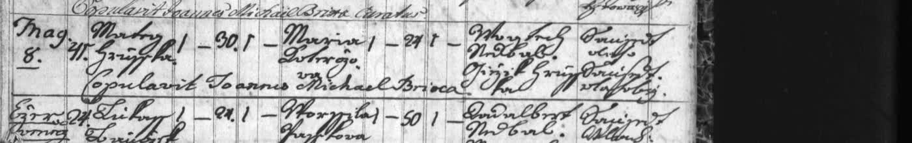
Bartoloměj Maun a Dorota Varcabová
doloženo
Narozena
Dorota: 29. 12. 1757 v Ostrově – „Ex Wostrow Dorothea … Patris Pauli Warzawa Rustici, Matris Mariae Annae, subditi Communitati Prachaticensi“; kmotra Terezie, dcera † Matěje Marka, měšťana prachatického (křty Prachatice 1721–1760, snímek 393; našel Codex, ověřil Claude). Rok z kroniky (1757) potvrzen.
Narozen
Bartoloměj: 15. 8. 1757 v Ostrově – „Ex Wostroff Bartholomeus … Patris Joannis Maun Rustici, Matris Magdalena, subditi Communitati Prachatic.“; kmotr Jiří Fidler, prachatický radní, a jeho žena Marie Anna (křty Prachatice 1721–1760, snímek 389; Claude). Rok z kroniky (1757) potvrzen.
„Bartholomaeus filius Joannis Maun rustici ex pago Wostrow cum sua sponsa Dorothea filia superstite post defunctum Paulum Warczaba rusticum pariter ex pago Wostrow. Ambo subditi Civitati Prachatitz.“ – Bartoloměj, syn Jana Mauna, sedláka ze vsi Ostrov, se svou nevěstou Dorotou, pozůstalou dcerou po zemřelém Pavlu Varcabovi, rovněž sedlákovi z Ostrova. Oba poddaní města Prachatice. Svědci Vojtěch Kophinger a Jan Nachlinger, sedláci ze Starých Prachatic.
Úmrtí
Rejstřík farnosti Prachatice 1830–1853: „Maun Bartl, 1841, Mostrow (Ostrov)“, ve sloupci zemřelých, fol. 13; „Maun Dorothea, 1842, Mostrow“, fol. 33 – u Doroty není řádek zcela jednoznačně přiřazený ke sloupci zemřelých. Kronika: Bartoloměj † 1841, Dorota † 1842. (index Prachatice 1830–1853, snímek 69)
Rodný grunt
Ostrov čp. 7 byl grunt Maunů už za Bartolomějova otce: 30. 3. 1784 byl pokřtěn Vojtěch, syn „Maun Joannes Rusticus in pago Wostrow, Maria uxor“, dům čp. 7 (křty Prachatice 1761–1799, snímek 211; našel Codex, ověřil Claude). Roku 1757 se Janova žena jmenovala Magdalena, roku 1784 Marie – buď Janova druhá manželka, nebo jde o Bartolomějova bratra Jana; zatím neurčeno. V Ostrově žili i Varcabové: 1783 František Warczaba (čp. 14), 1799 sedlák Antonín Warczaba.
Varcabové 1753
15. 3. 1753 pokřtěna Kateřina, „nata ex Paulo Warzaba rustico ex pago Wostrow et Veronica“, manželská dcera – Dorotina nevlastní sestra z Pavlova manželství s Veronikou (viz níže) (křty Prachatice 1721–1760, snímek 340; Claude).
Vesnice
Ostrov patřil od roku 1370 městu Prachatice (věnoval ho vyšehradský probošt Jan Soběslav); proto jsou Maunovi i Varcabové v matrice „poddaní města Prachatice“. Od roku 1719 byla vrchností nad městem knížata ze Schwarzenbergu (Městské lesy Prachatice – historie; našel Hermes, ověřil Claude).
Nová generace
Jan Maun (otec Bartoloměje) a Pavel Varcaba (otec Doroty, † před 1781), oba sedláci v Ostrově – o generaci starší předci.
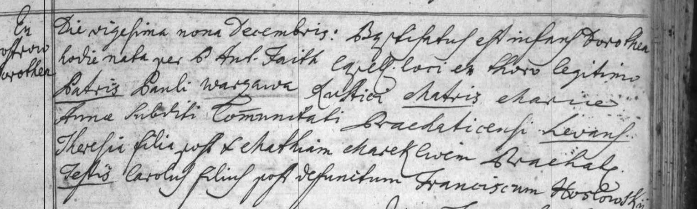
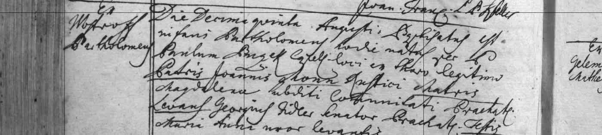
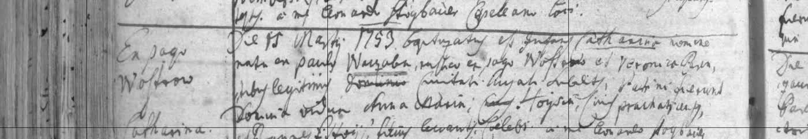
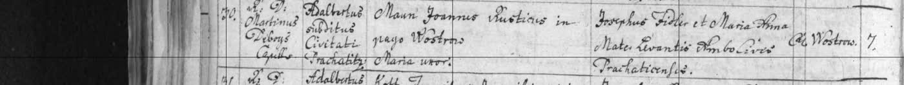
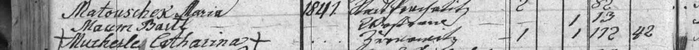
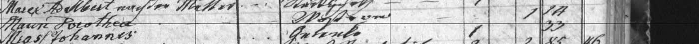
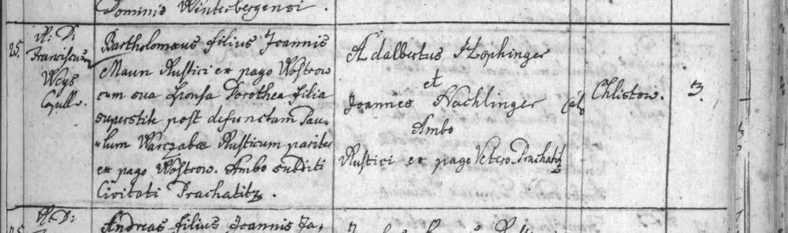
Zápis našel Codex (21. 10. 2026), přepis ověřil Claude.
Další generace: Petr Maun a Vavřinec Schißl
doloženo
Petr Maun × Terezie
Sňatek 26. 1. 1721 ve farnosti Prachatice: „Copulatus est Petrus filius defuncti Alberti Maun ex Pago Wostrow cum Virgine Teresia filia Georgij Kaderžawek[?]. Praesentibus Dño Sigismundo Högbaur & Mathia Prix. Cop. Martinus Rattay.“ – Petr, syn zemřelého Vojtěcha (Alberta) Mauna ze vsi Ostrov, s pannou Terezií, dcerou Jiřího Kaderžávka(?) (oddaní Prachatice 1660–1741, snímek 122). Tím se rod Maunů dostává k Vojtěchovi Maunovi, zemřelému před rokem 1721.
Vojtěch Maun
V matrice křtů 1666–1720 je Vojtěch (Albertus/Adalbertus) Maun z Ostrova dvakrát: 23. 9. 1692 „Albertus Maun et Magdalena ex pago Mostrow“, dítě Václav, kmotři Ezechiel V…(?) a Alžběta (snímek 186); a 24. 2. 1697 „Ex illeg. thoro Ursula filia Adalberti Maun ex Wostrow“, dítě Matyáš (snímek 200). Vojtěchova žena se tedy jmenovala Magdalena a Václav i Uršula byli nejspíš Petrovi sourozenci.
Sňatek Vojtěcha
pravděpodobně24. 2. 1669, Prachatice: „Z Wostrowa: W stav S. manž. wstaupil Albrecht Maun a pojal sobě Mandalenu, dceru Martina Ross…(?) odtud. Cop. sunt Prachat.“ (oddaní Prachatice 1660–1741, snímek 27; našel Codex, přečetl Claude). Jméno ženicha, nevěsty i obec sedí; příjmení otce nevěsty čteme nejistě a otec ženicha uveden není. Křty dětí z let po sňatku tuto dvojici potvrzují: Markéta 20. 4. 1670 („Z Wostrowa. Albrecht Mon. Magdalena“, sn. 50), Voršila 26. 9. 1671 (sn. 63), Ondřej 12. 11. 1674 (sn. 90), Vít 28. 5. 1677 (sn. 102) – vždy s kmotry Josefem a Alžbětou Klemerovými jako u pozdějších dětí. Našel Codex, Markétu a Víta přečetl i Claude. Otec Vojtěcha zatím neznámý.
Možný křest Vojtěcha
možná 6. 4. 1642, Prachatice: „Honz Mau…(?) / Kateřina … z Wostrowa / dítě Wogtěch“, kmotři Honz Fewer(?), Ambrož Kisser(?), Kateřina Meytlová(?) (křty Prachatice 1632–1653, snímek 60; našel Codex, prohlédl Claude). Obec a jméno dítěte sedí, příjmení otce čteme nejistě (Maun/Mauch?). Při sňatku 1669 by mu bylo 26 let. Pokud jde o něj, jeho rodiče byli Jan (Honz) Maun a Kateřina z Ostrova. V Ostrově žil už 1638 Hanz Man s ženou Martou (křest Řehoře, sn. 27).
Úmrtí Vojtěcha
19. 9. 1700 se oženil Jan P…(?) z Tannaschlagu(?) s Markétou, „filia defuncti Adalberti Maun ex Wostrow“ – dcerou zemřelého Vojtěcha Mauna z Ostrova (oddaní Prachatice, snímek 84; našel Codex, ověřil Claude). Vojtěch tedy zemřel mezi únorem 1697 a zářím 1700. Jeho sňatek s Magdalenou bude před rokem 1680 – v oddací knize 1688–1714 není.
Petr Maun – křest
3. 6. 1687: „Albertus Maun, Magdalena, ex Wostrowa – Petrus – Josephus Farber levans, Elisabetha Farberin testis – Decanus loci“ (křty Prachatice 1666–1720, snímek 166; našel Codex, ověřil Claude). Při sňatku 1721 mu bylo 33 let. Starší sourozenci podle Codexe (Claude zatím neověřil): Jakub 24. 7. 1680 (sn. 118), Regina 4. 9. 1682 (sn. 128, otec „rusticus“), Jan 8. 6. 1685 (sn. 151, česky „Albrechta Mona chalupníka ostrowskýho a Magdaleny“).
Petr v Prachaticích
26. 11. 1721 byla pokřtěna první dcera Barbara: „Z Miesta Podruch – Petrus Maun, Theresia Uxor“, kmotra Magdalena Schanderová (křty Prachatice 1721–1760, snímek 11; Claude, 22. 10. 2026). Petr tedy po svatbě žil jako podruh přímo ve městě Prachatice – proto je i roku 1728 a 1756 „podruh“. Do Ostrova se rod vrátil až s Janem (sedlák na čp. 7).
Jan Maun
Křest 9. 5. 1728: rodiče „Petrus Mon, Theresia uxor, inquilini … Civitatis subditi“, dítě Jan (Joannes Nep.), kmotr František Wandera(?) se ženou Martou (křty Prachatice 1721–1760, snímek 57). Otec Petr a matka Terezie odpovídají sňatku z roku 1721 a Petr je i roku 1756 „podruh“ (inquilinus). Že jde o téhož Jana, který se roku 1756 ženil, je velmi pravděpodobné, ale zápis ves Ostrov výslovně neuvádí. Při sňatku by mu bylo 28 let.
Vavřinec Schißl
Křest 6. 10. 1729: „Ex Wostrow … infans Catharina Parentum Laurentii Schißl et Elisabethae subditorum Civitatis Prach.“, kmotra paní Kristina, žena senátora Matyáše Fidlera (křty, snímek 72). Tím je potvrzeno čtení příjmení Magdalenina otce – Schißl (Šísl), sedlák z Ostrova; jeho žena se jmenovala Alžběta. Pozor: v Ostrově žili tehdy dva Vavřinci Schißlové – 14. 5. 1733 byl pokřtěn Jan Nepomuk, syn Vavřince Schößla a Alžběty, a 26. 5. 1733 „Ex Wostrow … Maria Magdal. Laurentii Schüßl et Gertrudis Parentum subditorum Civitatis“, kmotra Marie Fulssin(?) (křty, snímek 110). pravděpodobně Tato Maria Magdalena (* 26. 5. 1733, matka Gertruda) je nejvhodnější kandidátka na naši Magdalenu – při sňatku 1756 by jí bylo 23 let. Jistotu nemáme, protože zápis o sňatku neuvádí její matku ani věk.
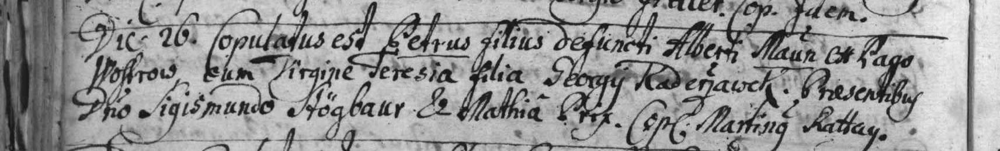
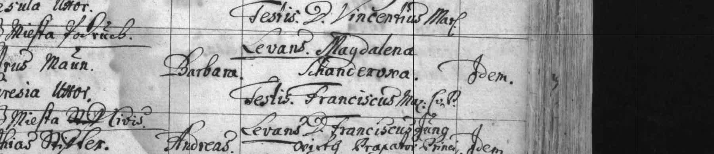
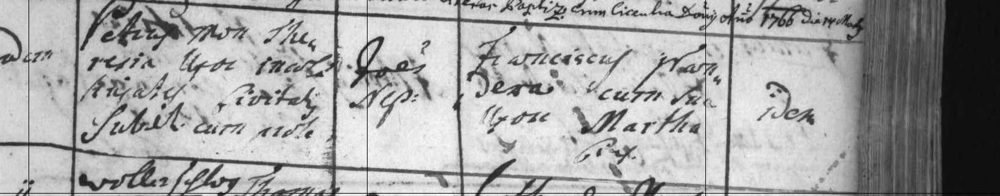
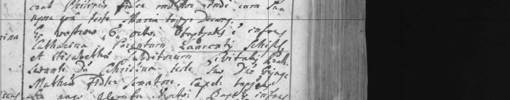
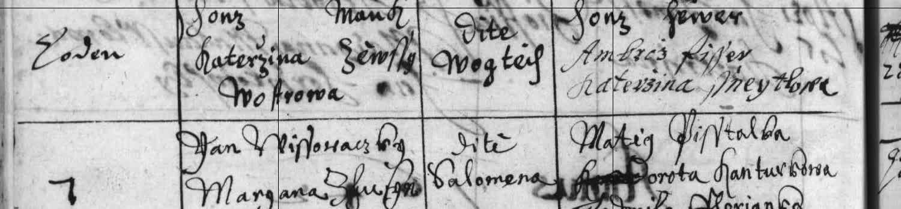
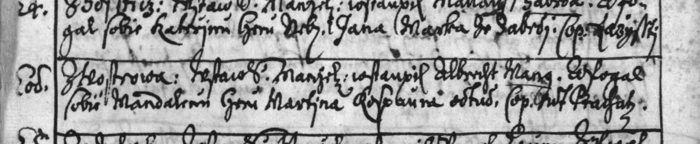
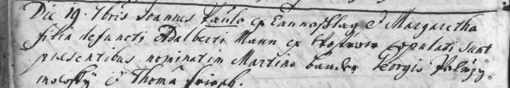
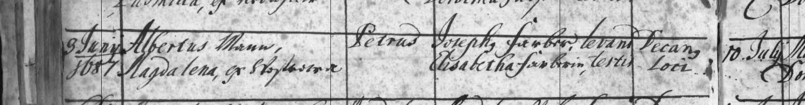
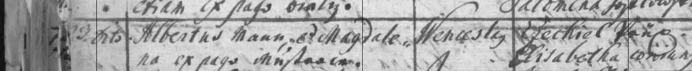
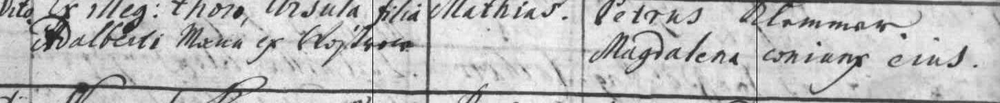
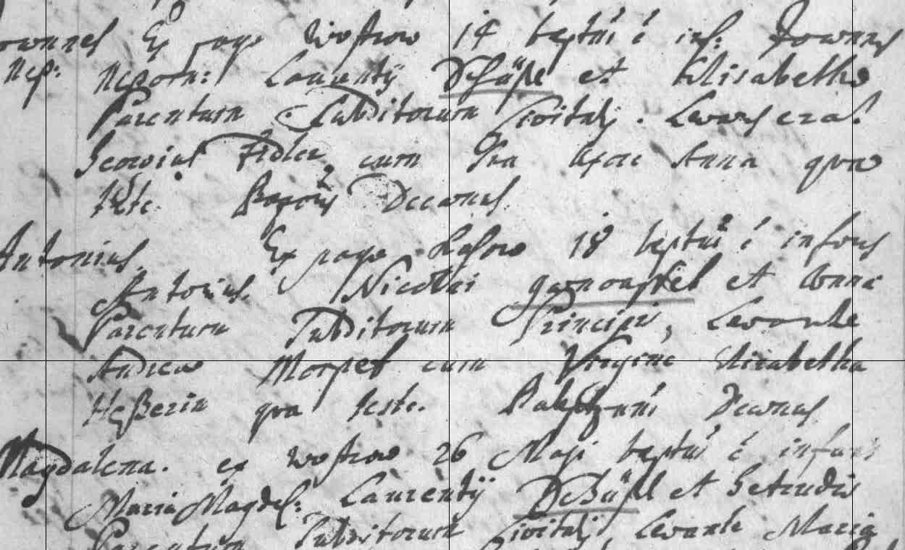
Sňatek 1721 a křest 1728 našel Codex, křest 1729 Claude; všechny přečetl a ověřil Claude (21. 10. 2026).
O generaci dál: rodiče Bartoloměje a Doroty
doloženo
Jan Maun × Magdalena
Sňatek 21. 11. (1756) ve farnosti Prachatice: „Sponsum Joannem filium Petri Maun Inquilini et Sponsam [Magdalenam] Laurentii Scheiol[?] Rustici ex pago Wostrow“, svědci Vavřinec Gruber(?), prachatický měšťan, a Jakub Paule, sedlák z Ostrova (oddaní Prachatice 1742–1828, snímek 53). Bartoloměj se narodil o 9 měsíců později. Další syn Josef * 17. 3. 1760 (sn. 416). Nová generace: Petr Maun, podruh, a Vavřinec Scheiol(?), sedlák z Ostrova. Příjmení nevěstina otce čteme nejistě.
Pavel Varcaba
Byl ženatý třikrát nebo dvakrát: 1746 s Uršulou (Codex, nečteno Claudem), s Veronikou měl dcery Annu Marii (6. 9. 1748, sn. 288) a Kateřinu (15. 3. 1753); jako vdovec se 30. 9. 1753 oženil s Annou Marií, pozůstalou dcerou † Víta Gehlíka(?), sedláka z Chlistova (oddaní, sn. 39). Z tohoto manželství je naše Dorota (1757).
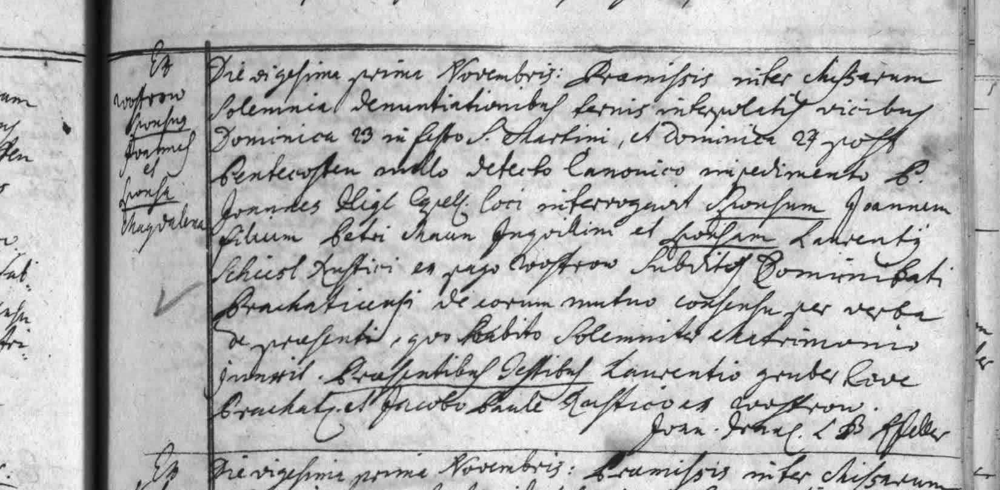
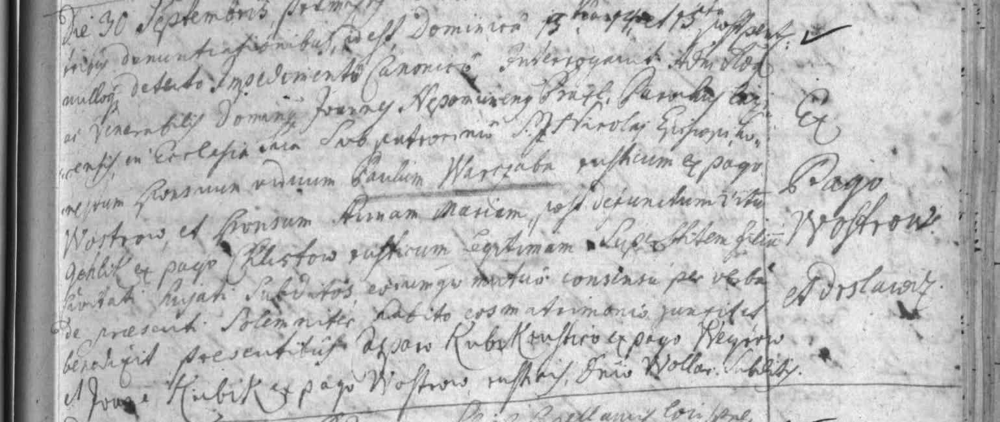
Zápisy našel Codex, přečetl a ověřil Claude (21. 10. 2026).
Terezie Krejsová
doloženo
Rodné příjmení
Maunová, z Ostrova (farnost Prachatice) – stejně ve 4 křestních zápisech dětí 1818–1829 i v zápisu vnuka 1882
Rodiče
Bartoloměj Maun, sedlák v Ostrově čp. 7, a Dorota (Dorothea) její rodné příjmení nejisté
Úmrtí
8. 3. 1869, „vdova po † Josefu Krejsovi, výminkáři z Hoštic čís. 12, rozená Maun z Vostrova“ – matrika Z 1841–1918, snímek 87
Děti
Regina (1818), Marianna (1819), Ondřej (1821), dítě (1824, zemřelo), Kateřina (1829), František
Sňatek
1817 ve farnosti Prachatice – rejstřík: „Kreysa Joseph u. Theresia, 1817, Dorf Mostrow, getraut, fol. 5“ (index Prachatice 1807–1831, snímek 79); samotný zápis v knize oddaných zatím dohledáváme
Narození
zatím nenalezeno
Z rodinné kroniky
kronika
Rodinná kronika (str. 25) uvádí následující data; většinu jsme už v matrikách potvrdili (viz deník), dosud neověřeno zůstává narození Terezie 21. 9. 1788 a úmrtí Matouše a Magdaleny: narození a úmrtí Josefa Krejsy (2. 3. 1790 Chlumany čp. 41 – 17. 6. 1866 Hoštice čp. 12) a Terezie Maunové (21. 9. 1788 Ostrov – 8. 3. 1869 Hoštice čp. 12), jejich sňatek roku 1817 a o generaci starší předky: Matouše Krejsu († 1827) s Magdalenou Kotrcovou († 1817, sňatek 1785) a Bartoloměje Mauna (1757–1841) s Dorotou Varcabovou (1757–1842, sňatek 1781). Se zápisy z matrik se kronika shoduje: první dítě Josefa a Terezie se narodilo 1818 a Terezie je v matrice vždy „dcera Bartoloměje Mauna, sedláka z Ostrova“.
Kdo byl otcem Josefa (* 1852)?
otevřené
V křestním zápisu je kolonka otce prázdná a uznání otcovství tam není. Kmotry byli prarodiče. Rodina má tradici, že otcem byl šlechtic, asi Dietrichstein.
Co víme o okolí: Šumavské Hoštice patřily k panství Vimperk, které v letech 1719–1945 drželi Schwarzenbergové. Sousední panství Vlachovo Březí naopak od roku 1680 do vymření rodu v polovině 19. století patřilo Dietrichsteinům, kteří ale sídlili hlavně v Mikulově, v Libochovicích a ve Vídni. V roce 1858 ho získali Herbersteinové. (Zdroj: Wikipedie, hesla Vlachovo Březí, Vimperk, Zámek Vimperk.) Josef se později usadil jako sedlák v Předslavicích, asi 5 km od Vlachova Březí. Jeho syn byl „panský kočí“.
Indicie od rodiny: Nemanželské dítě, v té době společensky znevýhodněné, se podle rodinné tradice stalo sedlákem v Předslavicích čp. 20 – sčítání 1910 to ale nepotvrzuje: Josef tehdy bydlel na čp. 12 v domě hraběte Herbersteina a byl čeledínem na velkostatku (čp. 20 se objevuje jen v rejstříku narozených 1890, jako místo narození syna). A jeho syn Josef (* 1890) byl soukromě vzděláván u pana řídícího učitele, všestranně a hlavně hudebně, což bylo na venkově privilegium. Rešerši pozemkových knih k čp. 20 dělá SOkA Strakonice; archivářka zatím zjistila, že Josef na čp. 20 zapsán není a ve sčítání 1910 je na čp. 12 jako nájemník.
Kdo byli Dietrichsteinové v roce 1852: rod tehdy vedl kníže František Josef z Ditrichštejna (1767–1854); jeho jediný syn Josef František (1798–1858) zdědil majetek roku 1854 a měl jen čtyři dcery. Rodina žila hlavně v Praze, ve Vídni a v Libochovicích. Zámek ve Vlachově Březí podle hrady.cz už od konce 17. století nesloužil jako panské sídlo, byly v něm jen byty panských úředníků. (Zdroje: Wikipedie, hrady.cz.) Otcem tedy mohl být spíš někdo z dietrichsteinské správy panství – úředník, hajný, správce – než člen knížecí rodiny; tradice „šlechtic od Dietrichsteinů“ by se tak mohla vysvětlit. Je to jen hypotéza.
Noviny 1852 (Kramerius): v seznamech hostů pražských novin Tagesbote aus Böhmen je v březnu a srpnu 1852 „Graf Dietrichstein, k. k. Kämmerer, sammt Familie, Leitmeritz“ a „Graf Dietrichstein, k. k. geh. Rath, Libochowitz“, v Prager Zeitung 5. 10. 1852 jeho odjezd do Vídně. Dietrichsteinové se tehdy pohybovali mezi Libochovicemi, Prahou a Vídní. Zmínku o jejich pobytu na Šumavě nebo ve Vlachově Březí kolem přelomu 1851/1852 (doba početí) jsem zatím nenašel. Možné je i to, že Kateřina tehdy sloužila mimo domov (např. v Praze) a rodit se vrátila k rodičům – to zatím nevíme.
Předslavice i Želibořice patřily k dietrichsteinskému panství (ověřeno 21. 10.):Topographisches Lexikon von Böhmen z roku 1852 uvádí: „Predslawitz (Předslawice), Gemeinde und Dorf, Bezirk Wolin … D. Wällischbirken, Pfarrkirche, Schlößchen“ – tedy obec patřící k panství (Dominium) Vlachovo Březí, s farním kostelem a zámečkem. Stejně tak Bušanovice („D. Wällischbirken“) a Želibořice („D. Wällischbirken u. Dub“). Josef (* 1852), nemanželský syn, se tedy usadil jako sedlák přímo na panství, které do roku 1858 patřilo Dietrichsteinům (pak Herbersteinům), a jeho syn Josef (* 1890) byl panským kočím a žil v Želibořicích – podle rodiny na místě zvaném „Ve dvoře“, nejspíš u panského dvora. Důkaz otcovství to není, ale vazba rodiny na toto panství je doložená. (Národní knihovna, Kramerius)
Zatím nenalezeno: žádný pozdější sňatek Kateřiny v rejstřících Vlachova Březí (1820–1873) ani Chluman (1831–1921). Blízkost dietrichsteinského panství tradici podporuje jen nepřímo, důkazem není.
Růžena Nečinová (* 1891)
doloženo v rejstříku
Rejstřík narozených farnosti Předslavice (1655–1905): svazek 12, str. 103 · čp. 3 · Oulehle (Úlehle) · Nečina Růžena · otec Václav, matka Anežka · 1891, leden 25. Potvrzuje údaj kroniky. Sňatek s Josefem Krejsou 16. 9. 1919 zatím jen podle kroniky – rejstříky oddaných končí rokem 1902.
Rejstřík zemřelých farnosti Předslavice (1664–1903): 1891, 30. 10. · Krejsa Marie · otec Josef, matka Marie · věk 4 roky 5 měsíců 22 dní · Předslavice čp. 20 · svazek 10, strana 114. Dcera Josefa (* 1852) a Marie, narozená tedy asi v květnu 1887. Rodina bydlela na čp. 20 nejpozději od roku 1890 (narození syna Josefa); bydliště ale samo nedokládá vlastnictví.
Jmenný rejstřík oddaných farnosti Předslavice (1655–1902) uvádí: 1886 · Krejsa Josef · Předslavice čp. 1 · Drábeš Kateřina · čp. 18 · strana 81. Rejstřík potvrzuje rok sňatku; přesný den (7. 1. 1886) je podle kroniky. V době svatby Josef bydlel na čp. 1, roku 1890 už na čp. 20 – kdy a jak usedlost nabyl, rejstřík neříká. domněnka Dům Předslavice čp. 1 je ve sčítání lidu 1910 zapsán jako majetek fary („Fara“, sčítání 1910, arch čp. 1). Pokud se číslo domu mezi lety 1886 a 1910 nezměnilo, Josef v době svatby bydlel nebo sloužil na předslavické faře – sedělo by to s rodinnou zprávou, že ho vzdělával řídící učitel. Ověřené to zatím není; rozhodne celý zápis o sňatku (vyžádán z archivu). Katalog duchovenstva budějovické diecéze z roku 1890 uvádí v Předslavicích faráře Františka Wítka (* 1852, vysvěcen 1877), trojtřídní školu a jako patrona fary hraběnku Terezii z Herbersteinu, panství Vlachovo Březí (Catalogus ecclesiasticus 1890, s. 192–193). Farář Wítek přišel nejdřív 1877, otcem Josefa (1852) tedy být nemohl. Samotná kniha oddaných z let po 1873 online není – v ní by byl celý zápis včetně Josefova původu.
Oddací matrika, str. 81 (fotografie od Vítka, 23. 10. 2026): 7. 1. 1886 Josef Krejsa, čeledín v Předslavicích č. 1, a Kateřina Drabešová. V kolonce rodičů ženicha čteme Josefa Krejsu z Hoštic č. 12 a Terezii – Josefovy prarodiče; nevěsta je dcerou Matěje Drabeše, nájemníka v Malenicích č. 41, a Anny. Čtení z fotografie obrazovky, jméno matky a povolání jsou nejistá.
Deník hledání
25. 10. 2026 – Oddací matrika Předslavice, str. 81 (fotografie od Vítka; Codex, Claude): 7. 1. 1886 Josef Krejsa, čeledín v Předslavicích č. 1, × Kateřina Drabešová. V kolonce rodičů ženicha jsou Josef Krejsa z Hoštic č. 12 a Terezie – Josefovi prarodiče; podporuje to, že vyrůstal u nich. Otec nevěsty Matěj Drabeš, nájemník v Malenicích č. 41, matka Anna.
25. 10. 2026 – Pozemková kniha Hoštic (kniha 1042): u čp. 12 „Andreas et Barbara Kreysla“ a fol. 29 „Josefs Krejsla“ (Codex, Hermes). Ondřej * XI/1821 čp. 12 je syn Josefa a Terezie (7845, sn. 29); totožnost s Andreasem zatím neověřena.
25. 10. 2026 – Možní starší předci: Martin Kreyza × Kateřina z Buku 1732 (Lštění 5346, sn. 104) a další Kreyzové v Hošticích a Buku 1723–1740 (Codex). Vazba na Martina * asi 1728 neprokázaná.
23.–25. 10. 2026 – Bez nálezu (Codex, Hermes, Claude): Matoušův křest není ve Vimperku 1750–1758, Lštění 1748–1759, Hošticích 1757–1760 ani ve Vlachově Březí 1754–1759 (Matyáš z Chluman 9. 2. 1757 má otce Josefa, není to on). Hoštická kniha zemřelých nemá rok 1827. Křty Hoštice 1860–1885 bez Josefova osobního zápisu. Soupis osadníků Hoštic 1788–1863 a sirotčí kniha soudu Vimperk 1850–1879 nejsou online (SOkA Prachatice).
21. 10. 2026 – Oddaní Prachatice (6649, Codex): Jan Maun, syn Petra Mauna, × Magdalena, dcera Vavřince Scheiola(?) z Ostrova, 21. 11. 1756 (sn. 53); vdovec Pavel Warczaba × Anna Maria, dcera † Víta Gehlíka(?) z Chlistova, 30. 9. 1753 (sn. 39); Pavel × Uršula 1746.
21. 10. 2026 – Vojtěch Maun zemřel 1697–1700: 19. 9. 1700 sňatek jeho dcery Markéty, „filia defuncti Adalberti Maun“ (6648, sn. 84; Codex, ověřil Claude).
21. 10. 2026 – Křest Petra Mauna 3. 6. 1687, syna Alberta Mauna a Magdaleny z Ostrova (6639, sn. 166; Codex, ověřil Claude); sourozenci Jakub 1680, Regina 1682, Jan 1685 (Codex).
21. 10. 2026 – Vojtěch (Albert) Maun z Ostrova a jeho žena Magdalena: křest syna Václava 23. 9. 1692 (6639, sn. 186) a dítě dcery Uršuly 24. 2. 1697 (sn. 200) – Claude. Petrův křest v letech 1690–1699 není.
21. 10. 2026 – Pravděpodobný křest Magdaleny: 26. 5. 1733 Maria Magdalena, dcera Vavřince Schüßla a Gertrudy z Ostrova (6640, sn. 110, Claude); v Ostrově ale žili dva Vavřinci Schißlové. Také křest Terezie, dcery Petra Mauna, 23. 8. 1730 (sn. 81).
21. 10. 2026 – O generaci dál: sňatek Petra Mauna, syna † Vojtěcha Mauna z Ostrova, s Terezií 26. 1. 1721 (6648, sn. 122) a křest jejich syna Jana 9. 5. 1728 (6640, sn. 57) – našel Codex; v Ostrově Vavřinec Schißl a Alžběta, křest Kateřiny 6. 10. 1729 (6640, sn. 72) – Claude.
21. 10. 2026 – Ostrov byl od 1370 majetkem města Prachatice – vysvětluje „subditi Communitati Prachaticensi“ v zápisech (Hermes, ověřil Claude).
21. 10. 2026 – Křest Doroty Varcabové 29. 12. 1757, Ostrov, rodiče Pavel Warzaba a Marie Anna (6640, sn. 393, Codex). V téže knize 17. 3. 1760 Josef Maun, syn Jana a Magdaleny – Bartolomějův bratr (sn. 416).
21. 10. 2026 – Křest Bartoloměje Mauna 15. 8. 1757, Ostrov, otec Jan Maun, sedlák, matka Magdalena (6640, sn. 389) – kronika potvrzena, nová předkyně Magdalena.
21. 10. 2026 – Křty Prachatice 1752–1757 (6640, sn. 330–389, Claude): 15. 3. 1753 Kateřina, dcera Pavla Warzaby, sedláka z Ostrova, a Veroniky (sn. 340) – sestra Doroty; v Ostrově tehdy i Josef (8. 3. 1753) a Lukáš (11/1753). Maunové v letech 1752–1754 zatím nenalezeni.
21. 10. 2026 – Codex dokončil křty 1782–1799 (6641, sn. 200–300): 30. 3. 1784 Vojtěch, syn Jana Mauna, sedláka z Ostrova čp. 7, a Marie; 17. 10. 1783 Kateřina, dcera Františka Warczaby z Ostrova čp. 14. Terezie (1788) ani jiné dítě Bartoloměje a Doroty v tomto rozsahu nenalezeny.
21. 10. 2026 – Codex prochází prachatické křty 1782–1799 (kniha 6641): zápisy z Ostrova jsou v městské a předměstské řadě vzácné. Nález: 23. 6. 1799 křest Johannese Warzaby, nemanželského syna „Sophia Warzabin, Dienstmagd, Tochter des Anton Warzaba, Bauers aus dem Dorfe Wostrow“ – v Ostrově tedy 1799 hospodařil sedlák Antonín Varcaba, nejspíš bratr nebo synovec Doroty (sn. 268, ověřil Claude). V Prachaticích žila i městská větev Maunů (Ambrož, Josef, Jan – měšťané), vztah k ostrovským Maunům zatím neznámý.
21. 10. 2026 – Rejstřík Prachatice 1830–1853 (6691, sn. 69): Maun Bartl † 1841 a Maun Dorothea 1842, obě Ostrov – úmrtí z kroniky potvrzena v rejstříku.
21. 10. 2026 – Matrika oddaných Prachatice 1742–1828 (6649, sn. 148): sňatek Bartoloměje Mauna, syna Jana Mauna z Ostrova, a Doroty, dcery † Pavla Varcaby z Ostrova, roku 1781 – údaj kroniky potvrzen a přidána další generace (Jan Maun, Pavel Varcaba).
21. 10. 2026 – Rejstřík narozených Šumavské Hoštice 1784–1797 (7851, sn. 26): na rodném gruntu čp. 16 se narodili Martin Krejsa (8. 11. 1786), Matěj (31. 1. 1788) a Jakub (3. 4. 1792) – nejspíš vnuci Martina Krejsy († 1785), děti jeho syna Jiřího, který grunt převzal. Úmrtí Martina 12. 3. 1785 spadá do mezery: kniha zemřelých 1757–1784 končí rokem 1784 a další (7849) začíná až 1787.
21. 10. 2026 (noc) – Shrnutí noční práce (Claude, Codex, Hermes): nově doloženo v rejstřících – sňatek Josefa Krejsy a Terezie 1817 (farnost Prachatice, Ostrov), Josef Krejsa * 7. 11. 1890 Předslavice čp. 20, dcera Marie † 30. 10. 1891 na čp. 20, úmrtí Johany Krejsové (listopad 1807). Zjištěno: Kateřina se do Hoštic po 1852 nevrátila a do 1903 nezemřela ani v Předslavicích; grunt Hoštice čp. 12 přešel 1891 na Kouby. Codex nezávisle zkontroloval web a jeho 11 připomínek bylo zapracováno. Zbývá: úplné zápisy sňatků 1817 a 1886, narození Terezie (1788), úmrtí Martina (1785), dcera Marie (* asi 1887). Čeká se na odpověď SOkA Strakonice (pozemkové extrakty Předslavice čp. 20), slíbena do 30 dnů.
20. 10. 2026 – Matrika narozených Šumavské Hoštice 1808–1860 (SOA Třeboň, kniha 7845): nalezena Kateřina (snímek 41) a Josef (snímek 77).
20. 10. 2026 – Rejstřík 1865–1881 (kniha 7852, písmeno K): další Krejsové na čp. 12 (Aloisie 1870, Jan 1872, Barbara 1875, Kateřina 1876, Marie 1879) – vztah k rodině zatím neověřen. Sňatek Josefa (* 1852) v rejstříku do roku 1881 není.
20. 10. 2026 – Matrika narozených 1860–1885 (kniha 7846, snímek 169): Ondřej Krejsa, * 14. 11. 1882 na čp. 12, syn Františka Krejsy, sedláka, „manželského syna † Josefa Krejsy, sedláka z Hoštic č. 12, a manželky † Terezie, rodem Maun z Ostrova č. 18“. František je tedy Kateřinin bratr a dědic čp. 12; děti narozené na čp. 12 v letech 1870–1882 jsou nejspíš jeho.
20. 10. 2026 – Úmrtí „Josef Krejsa, nájemník, Hoštice č. 12, 14. 4. 1885“ (kniha 7850, snímek 99): ženatý, 56 let – není to Josef narozený 1852.
20. 10. 2026 – Matrika oddaných Šumavské Hoštice, roky 1817–1830 (kniha 7847): sňatek Josefa Krejsy a Terezie nenalezen.
20. 10. 2026 – Matrika N Šumavské Hoštice (kniha 7845, snímky 20–40): na čp. 12 se Josefu Krejsovi a Terezii, „dceři Bartoloměje Mauna, sedláka z Ostrova č. 7, a Doroty“, narodili Regina 22. 5. 1818 (sn. 22), Marianna 18. 11. 1819 (sn. 25), Ondřej 18. 11. 1821 (sn. 29) a dítě 5. 4. 1824 (sn. 34). V letech 1815–1817 na čp. 12 žádné jejich dítě není.
20. 10. 2026 – Matrika zemřelých Šumavské Hoštice (kniha 7850): úmrtí Josefa Krejsy 17. 6. 1866 (sn. 85) a Terezie Krejsové, roz. Maun z Vostrova, 8. 3. 1869 (sn. 87) – obě data z rodinné kroniky potvrzena.
20. 10. 2026 – Matrika Chlumany 1784–1819 (kniha 8387, snímek 9): křest Josefa Krejsy 2. 3. 1790, čp. 41, rodiče Matouš Krejsa a Marie Magdalena – údaj kroniky potvrzen.
20. 10. 2026 – Křestní zápis 1852 (sn. 77) znovu v plném rozlišení: kmotři Josef Krejsa, sedlák z Hoštic čp. 12, a Terezie jeho manželka (podepsáni křížky); křtil Anton Střědický (?), lokalista; porodní bába Regina … z Hoštic. Kolonka otce prázdná, žádná pozdější poznámka o legitimaci. Narození 1853–1860 v Hošticích (sn. 78–85): žádné další dítě Kateřiny. Rejstřík N/O/Z 1853–1864 (kniha 7851, písmeno K, sn. 39–40): Kateřina Krejsová není ani mezi oddanými, ani mezi zemřelými – po roce 1852 z farnosti nejspíš odešla. Pozor: v Hošticích žila i druhá větev Krejsů na čp. 16 (sedlák Matouš Krejsa, syn Josef * 7. 12. 1853) – s naším Josefem nesouvisí.
20. 10. 2026 – Rejstřík farnosti Šumavské Hoštice 1784–1864 (7851, sn. 32, písmeno K): „Kreisowa Johanna, Novemb 1807, Hoschtiz, zemřelá“ – odpovídá úmrtí Johany, ženy Martina Krejsy (mamčin rodokmen: 30. 10. 1807). Samotný zápis v knize zemřelých zatím nedohledán.
21. 10. 2026 – Rejstřík farnosti Prachatice 1807–1831 (6690, 2. běh abecedy, K, sn. 79): „Kreysa Joseph u. Theresia, 1817, Dorf Mostrow (Ostrov), getraut, fol. 5“ – sňatek z kroniky (1817) potvrzen v rejstříku.
22. 10. 2026 – Sčítání 1921, obec Bušanovice, osada Želibořice čp. 1, byt 7 (svazek 636314, sn. 14; Claude)
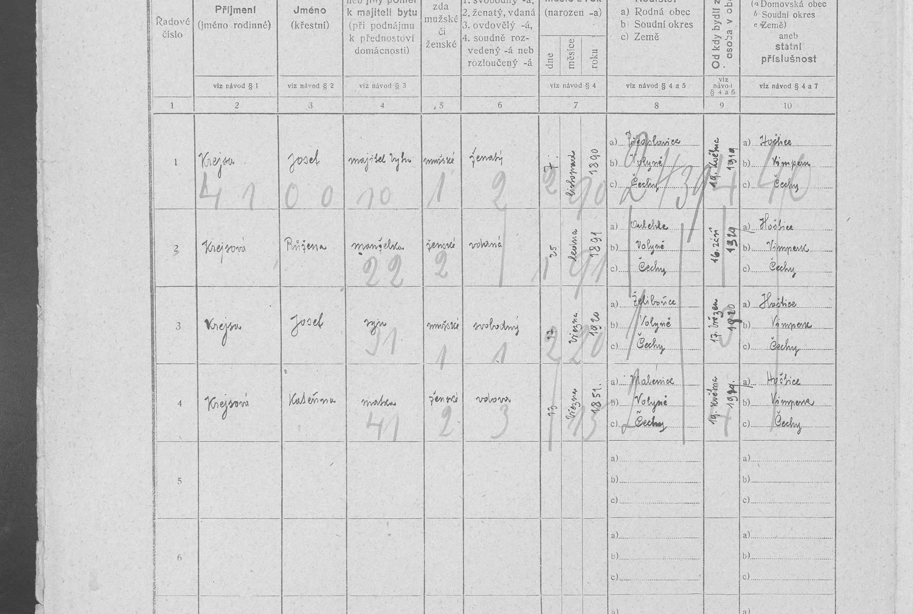
: Josef Krejsa * 7. 11. 1890 Předslavice, majitel bytu, ženatý, čeledín na velkostatku v Želibořicích (16. 7. 1914 hudebník), v obci od 19. 5. 1919; manželka Růžena * 25. 1. 1891 Úlehle; syn Josef * 17. 3. 1920 Želibořice; matka Kateřina Krejsová, vdova, * 13. 3. 1851(?) Malenice, v obci od 19. 5. 1919. Domovská obec všech: Hoštice, okres Vimperk. → Josef Krejsa (* 1852) zemřel mezi prosincem 1910 a únorem 1921, nejspíš před květnem 1919, kdy se vdova přestěhovala k synovi.
22. 10. 2026 – Oprava (podnět archivářky): ve sčítání lidu 1910 je Josef Krejsa v Předslavicích čp. 12, ne na čp. 20. Dům patřil hraběti Josefu Herbersteinovi (vlastník panství Vlachovo Březí). Byt č. 9: Josef Krejsa, * 30. 9. 1852 Hoštice Šumavské, ženatý, domovská obec Hoštice, polní hospodářství – čeledín na velkostatku (od 1905 v obci); manželka Kateřina, * 13. 3. 1857 Malenice(?); syn Josef * 7. 11. 1890 Předslavice, pomocník (od 1905) (sčítání 1910, Předslavice čp. 12, sn. 30; Claude). Údaj kroniky „sedlák na čp. 20“ tím neplatí – Josef byl panský čeledín. Matka syna je tedy Kateřina (rejstříkové „Marie“ je chyba).
22. 10. 2026 – Martin a Johana Krejsovi doloženi v matrice: 19. 10. 1755 pokřtěna Uršula, „ex parentibus Martino Kreysa in pago Hossititz inquilino et conjuge ejus Johanna, Dominio Winterberg subditis“, kmotři Anna a Matěj Jungwirth (matrika Lštění 1741–1784, snímek 47; našel Codex, přečetl Claude). Hoštice tehdy patřily k farnosti Lštění. Martin byl roku 1755 v Hošticích podruhem; sedlákem na čp. 16 je až v soupisu 1777. Matoušův křest (1750–1758) v knize zatím nalezen nebyl. Přepis soupisu 1777 uvádí u Martina a Johany Annu a Jiřího, Matouše ne; údaj o jeho rodičích je zatím jen z rodinného rodokmenu.
22. 10. 2026 – Rejstřík narozených farnosti Vlachovo Březí, zahrnující i Chlumany, v prohlédnutých letech 1751–1756 pod písmenem K neuvádí Matouše Krejsu (kniha 8404, snímek 61). Jeho oddací zápis z roku 1785 uvádí věk 30 let, ale rodiče ani rodiště neuvádí. Původ Matouše proto dál zůstává nevyřešený. Dobrovolnický jmenný rejstřík k chlumanské knize 8388 neuvádí Matouše mezi úmrtími roku 1827; v matrice, snímek 68 začíná rok 1827 a na následujícím snímku už je 1828. Úmrtí 1827 je zatím jen údaj rodinné kroniky a hledáme je i mimo Chlumany.
22. 10. 2026 – Pravděpodobný křest Marie Magdaleny Kotrcové (ženy Matouše Krejsy): 13. 7. 1763 Chlumany, „Magdalena, legitima filia Josephi Kotrc et Dorotheae“ (křty Chlumany 1727–1765, sn. 208, str. 406; rejstřík našel Codex, zápis přečetl Claude). Při sňatku 1785 uvedeno 24 let – zápis z 1763 dává 21–22; jiná Magdalena Kotrcová v rejstříku 1752–1765 není.
22. 10. 2026 – Nalezeno úmrtí Kateřiny: 29. 5. 1898 v Husinci č. 110, vdova po Kajetánu Křížovi (Husinec 4004, sn. 112); Kajetán, nádeník, † 6. 11. 1892 Husinec 157, 53 let (sn. 80). Codex (rejstřík) + Claude (matrika).
22. 10. 2026 – Petr Maun byl podruh ve městě Prachatice: křest dcery Barbary 26. 11. 1721 (6640, sn. 11; Claude).
22. 10. 2026 – Možný křest Vojtěcha Mauna 6. 4. 1642 (rodiče Honz Mau…? a Kateřina z Ostrova; 6637, sn. 60) a 1638 Hanz Man z Ostrova (sn. 27) – Codex, nejisté čtení příjmení.
22. 10. 2026 – Starší děti Vojtěcha a Magdaleny Maunových: Markéta 1670, Voršila 1671, Ondřej 1674, Vít 1677 (6639; Codex, ověřil Claude). Potvrzuje sňatek 1669.
22. 10. 2026 – Pravděpodobný sňatek Vojtěcha (Albrechta) Mauna z Ostrova s Magdalenou, dcerou Martina Ross…(?), 24. 2. 1669 (6648, sn. 27; Codex, ověřil Claude).
22. 10. 2026 – Úmrtí Dvory 1865–1903 (5124, sn. 115–131) prošlá: syn Václav Kříž † 17. 8. 1868; Kateřina tam nezemřela. 1875 je v čp. 26 jiný pastýř – rodina odešla (Claude).
22. 10. 2026 – Kateřina a Kajetán Křížovi žili ve Dvorech čp. 26 (farnost Lažiště): syn Jakub * 30. 8. 1862, syn Václav * 8. 9. 1864 (Dvory 5124, sn. 47 a 49; Claude). Josefovi (1852) byli nevlastní bratři.
21. 10. 2026 – Kateřina se vdala: 11. 2. 1862 si v Hošticích vzala Kajetána Kříže (23¾), obecního pastýře ve Dvorech, syna Martina Kříže z Malenic (7848, sn. 22; Claude). Starší rejstříky ani dobrovolnický index sňatek neuvádějí. Dál hledáme jejich děti a kde žili – může to pomoci i k otci Josefa (1852).
21. 10. 2026 – Rejstřík farnosti Šumavské Hoštice 1865–1897 (7852, písmeno K, sn. 19–23): Kateřina Krejsová v Hošticích nezemřela ani se tam nevdala. Poslední Krejsa na čp. 12 je Klára (* 12. 1. 1889); od 1891 jsou na čp. 12 Koubové (sňatek Jan Kouba 10. 11. 1891) – grunt čp. 12 přešel na jinou rodinu.
21. 10. 2026 – Rejstřík narozených farnosti Předslavice (6781, sn. 84): Josef Krejsa * 7. 11. 1890, čp. 20, rodiče Josef a Marie – kronika potvrzena.
21. 10. 2026 – Rejstřík zemřelých farnosti Předslavice 1664–1903 (6783, písmeno K, sn. 36–51): jediný záznam Krejsů – Marie † 30. 10. 1891, čp. 20. Josef (* 1852) ani Kateřina (* 1829) v něm do roku 1903 nejsou.
20. 10. 2026 – Křty Vimperk 1727 (kniha 8285, sn. 71–78): Martin Krejsa nenalezen. Podle mamčina rodokmenu je jeho rok narození jen odhad (asi 1727–1729) ze soupisu poddaných 1777, kde je mu 49 let.
20. 10. 2026 – Noviny v Krameriu (NK ČR, fulltext): Krejsa × Předslavice, Želibořice, Vlachovo Březí, Malenice, Drabeš – nic k naší rodině. Jediný nález: Tagesbote aus Böhmen 20. 1. 1867 – exekuční dražba „Real. Nr. 16 der Ehel. Kreysa in Huschitz, 4960 fl.“ (čp. 16 je rodný grunt Martina Krejsy, z něhož naše větev pochází – dražba se týká potomků jeho syna Jiřího).
20. 10. 2026 – Farnost Bušanovice (rodina podle vzpomínek později žila v Bušanovicích): rejstřík oddaných 1655–1902 (kniha 6782) – v Bušanovicích žádný Krejsa; tentýž rejstřík ale obsahuje sňatek Josefa Krejsy v Předslavicích 1886 (viz výše). Dobrovolnický rejstřík sňatků 1925–1938 (kniha 12279) – žádný Krejsa.
Co hledáme dál: otec Josefa (* 1852) a jak získal usedlost Předslavice čp. 20 (dotazy odeslány: SOkA Strakonice – pozemkové knihy, SOA Třeboň – úplný oddací zápis 1886, SOkA Prachatice – poručenské spisy okresního soudu Vimperk, VÚA Praha – kmenové listy obou Josefů); úplný zápis sňatku 1886 a 1817; narození Terezie Maunové (1788) a Matouše Krejsy; Ostrov čp. 7 nebo čp. 18 (zápisy 1818–1829 uvádějí čp. 7, zápis vnuka 1882 čp. 18); spojení k dnešním generacím.
.jpg){kind=link}

_-_celkov%C3%BD_pohled_od_JV.jpg){kind=link}

.jpg){kind=link}
,_n%C3%A1ves_II.jpg){kind=link}